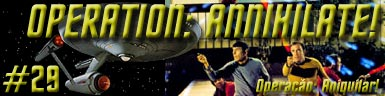
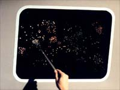
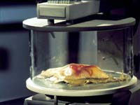
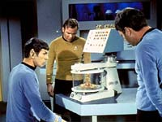
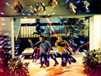
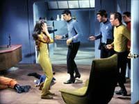
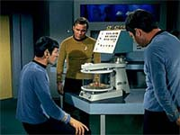

|
Série
Clássica
Temporada 1

Análise do episódio por
Carlos
Santos

|

|
MANCHETE
DO EPISÓDIO Data Estelar: 3287.2. A USS
Enterprise segue em direção ao planeta Deneva, onde a população parece estar sofrendo
de um tipo de epidemia de loucura. O planeta não responde a tentativas de comunicação.
Durante a aproximação eles localizam uma nave vinda de Deneva seguindo em direção
ao sol de seu sistema. A Enterprise tenta salvar o único tripulante a bordo, mas
não consegue. Antes que sua nave fosse desintegrada a Enterprise ouve apenas o
tripulante declarar que “estava livre” antes de morrer. A Enterprise volta ao
curso para Deneva, onde entre seus habitantes estão o irmão de Kirk, Sam, sua
cunhada Aurelan e seu sobrinho, David. Após estabelecer órbita Uhura estabelece
um breve contato com um transmissor particular operado por sua cunhada, tempo
o suficiente para pedir ajuda, mas o sinal é cortado abruptamente. Kirk lidera
um grupo de descida para investigar a pouca atividade do planeta. Eles encontram
pouquíssimas pessoas nas ruas e quase ninguém em movimento. Os poucos encontrados
tentam atacar o grupo ao mesmo tempo em que parecem querer avisá-los de algum
perigo.  Uma vez na enfermaria Aurelan recobra a consciência e apesar de sentir dor
extrema consegue falar algo sobre criaturas que tomam conta dos corpos, usando-os
como hospedeiros para sobreviver e para se espalhar por outros lugares. Ela diz
a Kirk que este precisa impedir tais coisas de espalharem, entretanto ela não
suporta a dor e morre. Kirk volta ao planeta e pergunta a Spock pelas tais
criaturas, mas o vulcano informa não ter visto nada de anormal, além da ausência
de pessoas nas ruas e de um estranho som, o qual ele estava indo investigar. Kirk
se une ao grupo de desembarque e entram em num prédio que parece ser a origem
do som. Lá dentro eles as criaturas responsáveis pelos eventos no planeta. Tal
criatura se mostra uma forma de vida extremante resistente aos fasers, além de
não serem registradas pelo tricorder. Kirk ordena a retirada, mas antes que isto
possa ser feito um das criaturas ataca spock. Kirk remove a criatura, mas Spock
já esta afetado. De volta a nave Mccoy constata que a criatura que atacou Spock
de alguma forma se integrou ao organismo de Spock. McCoy tenta removê-la cirurgicamente
mas não obtém sucesso. O doutor diz a Kirk não saber se pode salvar Spock,
ou seu sobrinho, deixando Kirk ainda mais frustrado. Enquanto isto, na enfermaria
Spock tem um surto de fúria enquanto a criatura tenta dominá-lo e ataca a tripulação
da ponte, numa tentativa de obrigar a Enterprise a descer em Deneva.  Ambos
deixam a enfermaria, sem perceber que Spock prosseguia em sua luta contra a criatura
em seu corpo. Ele arrebenta as amarras e depois tenta a fazer com que Scotty o
dessa a superfície, mas este o impede e chama Kirk. Quando o capitão chega a sala
de transporte Spock tenta convencê-lo de que está sob controle de sua ações, e
solicita que seu desembarque seja autorizado a fim de que ele possa recolher um
espécime alienígena para analise, uma vez que ele já está afetado. Ainda reticente,
mas sem alternativas, Kirk concorda, sob os protestos de Spock, que desce executando
sua missão com sucesso. Com o espécime em mãos McCoy e o próprio Spock passam
a pesquisar formas de destruir o organismo sem matar seus hospedeiros. Kirk lembra
que o piloto da nave que se jogou contra o sol de seu planeta gritou que estava
livre. Ele orienta a equipe a trabalhar neste foco. Seguindo a orientação de
Kirk eles tentam diversas opções sem sucesso, deixando a Kirk somente a opção
de destruir toda a vida em Deneva, incluindo seus habitantes, para impedir que
as criaturas sigam para outro planeta. Imaginando que não há mais alternativas
além da total destruição de Deneva e incerto a respeito da sua capacidade de continuar
no controle de suas ações, Spock pede permissão para desembarcar levando com ele
o sobrinho de Kirk. Kirk não permite e exige de sua equipe uma opção que mate
as criaturas e salve os colonos, e lembra do efeito do sol de Deneva no piloto
da nave suicida. Ele lembra ainda que as criaturas na superfície estão sempre
em locais escuros, o que pode ser um indicativo de que estas sejam sensíveis a
luz. Um primeiro teste é realizado mostrando que a teoria estava certa, entretanto,
visando descobrir se ação pode livrar os indivíduos conectados de seus hospedeiros,
Spock se oferece como voluntário e visando repetir as condições do planeta o vulcano
é exposto a luz intensa sem proteção. A experiência livra Spock da criatura em
seu organismo mas deixa-o cego. Somente após esta experiência McCoy recebe os
resultados dos testes de laboratório, que mostram que podia haver solução que
evitasse a cegueira de Spock.  A bordo da Enterprise Spock
volta ao serviço, enxergando, para espanto de todos. McCoy esclarece então uma
que formação ocular incomum dos Vulcanos teria protegido o Vulcano durante a exposição
a luz, algo que desconhecido de todos, até então. A Enterprise então deixa órbita
e segue seu caminho. Um dos maiores lugares comuns, senão o maior, da Série
Clássica é a forma como esta é montada em torno do “grande trio” Kirk, Spock
e McCoy, e como estes se relacionam dentro do contexto da série. Pois bem, neste
segmento podemos observar com detalhes extremos com se dá esta relação entre estes
personagens, uma vez que grande parte da trama de “Operation: Annihilate!”
tira um raio X deste relacionamento. Em breve chegaremos neste ponto. Antes
de disto é obrigatório passarmos pela personagem James T. Kirk, que tem neste
episodio elementos acrescentados a sua vida particular. Kirk, que começou como
um destemido e aventureiro capitão da Frota Estelar teve ao longo da série Clássica
poucos momentos onde precisou lidar com problemas tão pessoais. Nesta primeira
temporada, somente em “The City on the Edge of Forever”
ele tenha tido uma questão deste tipo nas mãos.  Se
a perda do irmão e da cunhada deixam Kirk abalado, a eminência de perder o sobrinho
e depois Spock, seu primeiro oficial e amigo, o deixam ainda mais aflito, o que
conforme dissemos antes, dá a Shatner uma boa oportunidade de atuar bem. Mas a
contaminação de Spock também fornece um bom pretexto para que ele mostre com todas
as letras o que é ser Vulcano, enquanto precisa se controlar para não ser dominado.
Nimoy consegue sucesso em passar para a audiência a dificuldade de vencer a
criatura em seu corpo, e sua determinação em prosseguir com seu trabalho apesar
da dor e da quase certeza de que estava condenado. Ele se oferece para ir a planeta,
tirando de Kirk o fardo de arriscar mais alguém para executar uma tarefa que cedo
ou tarde teria que ser feita, ou mais tarde, esclarecendo a todos que Kirk precisará,
pela responsabilidade que tem, ordenar a morte de seu sobrinho, e dele mesmo.
Spock faz isto para deixar claro a todos que não culpa Kirk pelo que ele terá
que fazer, e que ninguém mais deverá fazê-lo, ou ainda se oferecendo de imediato
como voluntário para a experiência. Estes momentos agregam ainda mais valor ao
caráter deste personagem tão querido e tão respeitado pelos fãs, justamente por
sua presença de espírito em situações como esta. DeForest Kelley tem uma de
suas atuações mais destacas da primeira temporada, não só pelo tempo em tela dedicado
a seu personagem, como pela sua importância. Neste segmento ele tem a chance de
mostrar sua competência e responsabilidade enquanto médico, sua sensibilidade
quanto à situação de seus dois amigos. Ele está sempre presente, ora em sua preocupação
quanto ao estado de saúde Spock, ora servindo como um conselheiro, ao lembrar
a Kirk suas responsabilidades de comando, apesar de suas perdas e sua preocupação
com seus amigos.  Quando o círculo se fecha, Kirk retorna ao comando de suas ações, voltando
a agir com firmeza e motivando seus homens a darem o melhor de si, ou seja, liderando.
Embora a negativa de Kirk quanto a opção de eliminar toda a vida em Deneva tenha
mais a ver com a aceitação da responsabilidade de ordenar a morte de um milhão
de pessoas, o que é algo absolutamente compreensível e saudável, do que propriamente
com uma decisão de comando. Mas em seguida ele dá uma contribuição significativa
na busca da solução ao perceber um detalhe que seus amigos (e especialistas) não
viram e engana-se quem pensa que este tipo de situação não acontece no mundo real.
Mais uma vez duelo lógica versus paixão se desenrola a bordo da Enterprise,
tendo é claro Spock e McCoy como contendores, mas aqui o episódio deixa claro
que quando ambos trabalham em conjunto, quando razão e emoção se equilibram através
de um elemento catalisador (Kirk) e chegam a um meio termo, é que se obtém o melhor
do dois mundos. Apesar das rusgas, o episodio deixa transparecer nas entrelinhas
a admiração que ambos nutrem um pelo outro. Com o termino da experiência e
como resultado, a cegueira de Spock, abre-se uma nova janela dentro do episodio.
Que ele ia recuperar a visão de alguma maneira, todo mundo já sabia, a questão
é : Havia um propósito na cegueira de Spock ? Penso que sim. Apesar de tentar
não demonstrar, Spock esta em choque com sua situação, mas mesmo assim ainda se
sente que precisa proteger McCoy do sentimento de responsabilidade, agregando
mais ainda a personagem. Ainda podemos observar a reação de McCoy e seu sentimento
de falha, de fracasso, ao perceber que poderia ter evitado tal situação. Ele não
culpa a pressa de Kirk, mas a si mesmo, assumindo para si tal responsabilidade.
É importante frisar que cada um dos três um forte momento emocional pelo menos
ao longo do episodio. Kirk, ao encontrar o irmão morto, Spock, ao descobrir-se
cego, e McCoy, ao perceber que podia ter evitado isto. No fim das contas, a falsa
encrenca em Deneva serviu apenas para que pudéssemos saborear um legítimo episídio
de Jornada nas Estrelas, com o melhor do grande trio em ação, tendo cada
um deles conseguido deixar uma marca forte da Série Clássica.  Além disto o cenário das externas dá uma “cara” bem singular a este
episodio, mas apesar da boa vontade da produção neste sentido ele é mal aproveitado.
Há sempre uma impressão de “deslocamento” tanto da equipe da Enterprise quanto
dos “nativos” Denevianos. Existe uma matéria no TB sobre os cenários artificiais
da Série Clássica terem contribuído para manter sua “atualidade”. Este
episódio é um perfeito exemplo disto, ao mostrar que as externas em ambiente urbano
nem sempre são um cenário amigável para a Série Clássica. No capítulo
“criaturas da semana”, acho que não vale pena discutir a caracterização das mesmas,
pois é chover no molhado falar sobre as dificuldades técnicas da época para executar
tal tarefa, mas o que eu gostaria de saber que lugar seria este, “onde as nossas
leis físicas não se aplicam”!? Uma bobagem desnecessária, mas de vez em quando
repetida quando se quer justificar algo e não se sabe muito bem como em Jornada
nas Estrelas. De significativo, apenas a noção que a descrição das criaturas
remete imediatamente à coletividade Borg, fazendo pensar se os parasitas de Deneva
não teriam sido uma fonte de inspiração para os vilões da Nova Geração.
Mais ainda, apesar do aspecto marcadamente emocional do segmento, é estranho
ver que Kirk tenha aceitado de forma tão serena, ao fim do episodio, a morte do
irmão e da cunhada, conforme é demonstrado no tradicional momento de descontração
na ponte. Pena, pois a condução do personagem no que diz respeito a esta perda,
até então correta, foi muito importante para o contexto do episódio. Por falar
no final, com a crise resolvida, temos mais uma dose daquele velho e bem vindo
bom humor da Série Clássica, e tiradas inesquecíveis como a fala sobre
as orelhas de Spock, e seu olhar de contentamento ao ver McCoy embaraçado, mais
uma vez. Em resumo, se a Série Clássica é pautada nas relações de amizade
e companheirismo do “grande trio”, permeadas com alguma dose de bom humor, “Operation:
Annihilate!” é realização total deste relacionamento, uma amostra fiel de
como as competências e características dos três personagens se unem de forma a
montar um “todo” coerente e sólido. Um coquetel do que há de mais significativo
nesta primeira edição da franquia.
McCoy - "Spock, are you all right?"
Escrito
por Steven W. Carabatsos Elenco: Episódio
anterior | Próximo episódio |